The Scoville scale, global chili varieties, and the world's great spice blends
The Scoville Heat Unit (SHU) was developed by pharmacist Wilbur Scoville in 1912. Originally measured by human tasters; now done via HPLC (high-performance liquid chromatography). SHU measures capsaicin concentration — the compound binding TRPV1 receptors on nerve cells.
Pure crystalline capsaicin: 16,000,000 SHU. Resiniferatoxin (from cactus Euphorbia resinifera): 16,000,000,000 SHU — 1,000x more potent than capsaicin. Law enforcement grade pepper spray is typically 5,000,000 SHU. At these concentrations, "heat" becomes dangerous acute inflammation. The Carolina Reaper is the highest SHU of any commercial food pepper — eating one is reported to cause immediate, severe pain lasting 20+ minutes with occasional capsaicin shock reactions.
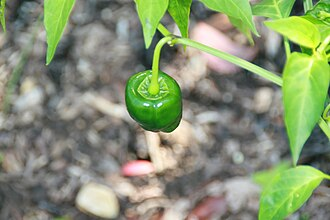
The most commonly used dried chili in Mexican cooking. Wide, wrinkled, brownish-black. Mild heat (1,000–2,000 SHU), rich flavor: dried fruit, chocolate, tobacco notes. Essential in mole negro, enchilada sauce, and adobo. Reconstitute in hot water 20 minutes before using.
1,000–2,000 SHU | Mexico
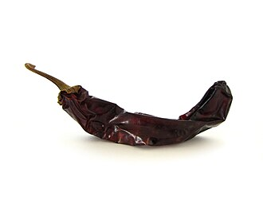
Smooth, mahogany red, elongated dried chili. Mild to medium heat, tangy and slightly fruity — berry and green tea notes. One of the "holy trinity" of Mexican dried chilies (with ancho and mulato). Used in birria, red salsas, and adobo marinades. Has a tough skin — strain sauces well.
2,500–5,000 SHU | Mexico
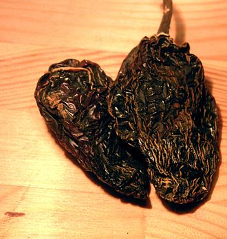
Red-ripe jalapeños smoke-dried over mesquite wood. Distinctive smoky, earthy, slightly sweet flavor. Available dried whole or canned in adobo sauce. The adobo sauce (chipotle en adobo) is deeply umami and versatile — add to mayo, beans, soups. Medium heat but the smoke can be as intense as the capsaicin.
5,000–10,000 SHU | Mexico
Small, thin, bright red dried chili — chile de árbol (tree chili). Intense heat and a clean, grassy, slightly nutty flavor. Used whole in oils and sauces; toasted before use to develop flavor. A staple in Mexican salsas roja. Store dried or used to infuse olive oil.
15,000–30,000 SHU | Mexico
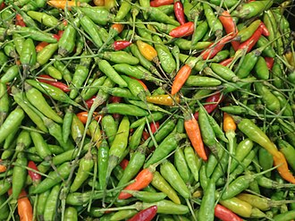
Tiny, intensely hot chili — name means "mouse dropping pepper." Fruity, bright heat that hits fast. Used whole in Thai curries and stir-fries. The phrik chee fah (finger chili) is the milder Thai variety in pad thai. Bird's eyes deliver maximum pain for minimum bulk.
50,000–100,000 SHU | Southeast Asia
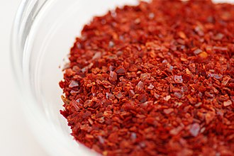
Coarsely ground sun-dried Korean red chili. Fruity, slightly smoky, moderately spicy. The backbone of kimchi, gochujang (fermented chili paste), tteokbokki, and sundubu jjigae. Two main varieties: slightly sweet (mudeun gochu) and hotter. Irreplaceable — don't substitute cayenne, which lacks the fruity complexity.
4,000–8,000 SHU | Korea
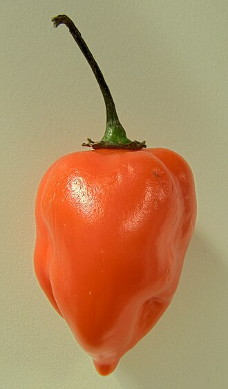
Lantern-shaped, wrinkled, orange-yellow (though red and chocolate varieties exist). Intense fruity, floral, apricot-like flavor overlaid with scorching heat. Used in Caribbean and Yucatán cooking — habanero-orange salsa is a Yucatán staple. The Scotch bonnet (Jamaica, Trinidad) is a close relative with similar SHU and a squat shape.
100,000–350,000 SHU | Yucatán/Caribbean
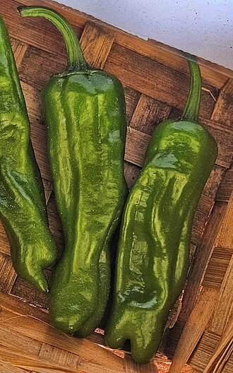
Thin-walled Japanese frying pepper, usually mild (1 in 10 is randomly spicy — the "Russian roulette" of peppers). Best blistered in a hot dry pan until charred, then tossed with flaky salt and a squeeze of lemon. Popular as an appetizer/tapas item. The Spanish padrón pepper is the closest equivalent (also 1-in-10 spicy).
50–200 SHU (occasional 1,000) | Japan
From Aleppo, Syria (and Gaziantep, Turkey where it's called pul biber). Burgundy-red, coarsely crushed, semi-dried with some residual oil. Flavor: fruity, slightly smoky, mild raisin sweetness, moderate heat. Replaces both sweet and hot paprika beautifully. Excellent on eggs, hummus, pizza, labneh. The Syrian civil war severely disrupted Aleppo pepper supply; most is now from Turkey.
10,000 SHU | Syria/Turkey
Turkish dried chili from Urfa (Şanlıurfa). Deep burgundy, slightly oily and moist. Extraordinary flavor complexity: smoky, earthy, chocolate-like, raisins, tobacco. Fermented and dried in a unique two-stage process (sun-dried by day, sweated in cloth by night). More flavor than heat. Outstanding on kebabs, grilled meats, chocolate desserts, labneh, and roasted vegetables.
7,500–8,000 SHU | Turkey
Round, reddish-brown dried Mexican chili — named "little bell" because the seeds rattle inside when shaken. Mild heat, complex flavor: slightly smoky, nutty, and woody with a hint of chocolate. Excellent in sauces and stews, rarely found outside Mexico. Toast whole in a dry pan before soaking — it amplifies the nutty notes considerably.
1,500–2,500 SHU | Mexico
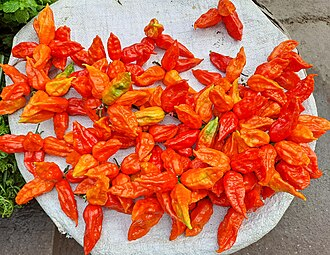
From Assam, India — the world's first certified "super-hot" (2007). Wrinkled, elongated, orange-red. Slow-building heat that crescendos dramatically 30–45 seconds after eating, peaks painfully, and lasts 20+ minutes. Fruity, floral flavor beneath the heat. The Indian Army studied its use in non-lethal grenades. Eating one for a "challenge" is not recommended without preparation.
800,000–1,000,000 SHU | India
A warming spice blend (garam = warm, masala = mixture) added at the end of cooking to preserve volatile aromatics. Not a curry powder — it doesn't contain turmeric. Regions and cooks vary their blend significantly.
Core: cumin, coriander, cardamom, black pepper, cinnamon, cloves, nutmeg, bay leaf, sometimes mace, star anise.
Name means "top of the shop" — the spice merchant's best blend. Can contain 20–30+ spices. Used in tagines, lamb, couscous, bastilla. Deeply complex and warming.
Core: rose petals, cardamom, cinnamon, coriander, cumin, ginger, turmeric, chili, nutmeg, pepper, allspice, mace, dried lavender.
The all-purpose spice blend of Arabic cooking. Used on grilled meats, rice dishes, stews. "Baharat" simply means "spices" in Arabic. Regional variations exist — Emirati, Turkish, and Lebanese versions differ.
Core: allspice, black pepper, coriander, cinnamon, cloves, cumin, nutmeg, cardamom, paprika.
Both a plant (wild thyme/oregano) and the blend made from it. Eaten daily in Lebanon, Syria, Jordan, Israel — mixed with olive oil and spread on flatbread (manaqeesh). Herbaceous, tangy, nutty.
Core: dried thyme/oregano, sumac (tart), sesame seeds, salt. Sometimes marjoram, cumin.
A balance of all five flavor profiles in Chinese cuisine: sweet, sour, bitter, salty, umami. Used in red-braised pork, Peking duck, char siu. The licorice/anise character is distinctive and polarizing.
Core: star anise, cloves, Chinese cinnamon (cassia), Sichuan peppercorn, fennel seeds.
A fragrant, floral blend from the South of France. Used on grilled meats, roasted vegetables, fish, and in ratatouille. The lavender differentiates it from Italian herb blends.
Core: thyme, rosemary, oregano, marjoram, savory. Traditional Provençal: lavender flowers.
The quintessential seafood spice blend — celery salt is the defining note. Used for crab boils, shrimp, oysters, popcorn, and as a general seasoning in the Mid-Atlantic. Created by Gustav Brunn (a German Jewish immigrant) in Baltimore, 1939.
Core: celery salt, paprika, black pepper, red pepper, mace, cloves, allspice, nutmeg, cardamom, mustard.
Seven-flavor chili pepper blend. Used as a table condiment for ramen, udon, yakitori, gyoza. Adds both heat and aromatic complexity. The citrus peel and nori are distinctly Japanese.
Core: red chili flakes, sanshō (Japanese pepper), nori (seaweed), sesame seeds, poppy seeds, dried mandarin orange peel, ginger.
Bold, earthy, hot. Used for blackened fish, chicken, shrimp, étouffée, red beans and rice. The "holy trinity" of Cajun cooking (onion, celery, bell pepper) is the vegetable equivalent. Not to be confused with Creole seasoning, which is more complex.
Core: paprika (sweet), cayenne, garlic powder, onion powder, black pepper, oregano, thyme.
The toppings of an "everything bagel" — invented at a bagel shop in Howard Beach, Queens in the 1980s. Became a standalone spice blend in the 2010s. Used on avocado toast, cream cheese, salmon, roasted vegetables, hummus.
Core: sesame seeds (white + black), poppy seeds, dried onion flakes, dried garlic flakes, flaky salt.
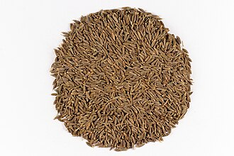
Earthy, warm, slightly smoky. The most widely used spice in the world. Essential in Indian, Middle Eastern, Mexican, and North African cooking. Toast whole seeds before grinding to amplify flavor. Cumin is the seed of Cuminum cyminum, not to be confused with caraway (similar but more anise-like).
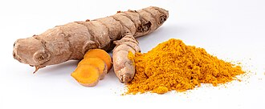
Brilliant golden-yellow rhizome with earthy, slightly bitter, musky flavor. Contains curcumin (1–6% of dry weight) — a powerful anti-inflammatory compound studied extensively. Best absorbed with black pepper (piperine increases bioavailability 2,000%). Essential in curries, dal, golden milk. Stains everything permanently.
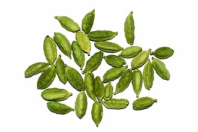
The "Queen of Spices" (pepper is king). Green cardamom: floral, citrusy, slightly sweet. Used in chai, kheer, Swedish cardamom buns, Scandinavian baking. Black cardamom: smoky, camphor-like, used in biryanis and Chinese braised meats. One of the world's most expensive spices after saffron and vanilla.
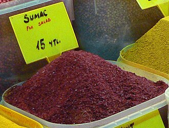
Deep burgundy-red ground berries of Rhus coriaria. Intensely tart — lemony sourness without citrus flavor. Used throughout Middle Eastern and Mediterranean cooking as an acid brightener (same role as lemon). Sprinkled over hummus, labneh, salads, grilled fish. Cannot be substituted with lemon — the flavor profile is distinct.
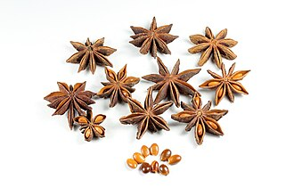
Eight-pointed star pod from Illicium verum. Intensely licorice-like, slightly bitter, warm and sweet. Essential in Chinese five spice, Vietnamese pho broth, French bouillabaisse. Contains anethole (same compound as anise and fennel). Also the commercial source of shikimic acid, a precursor to Tamiflu (oseltamivir).
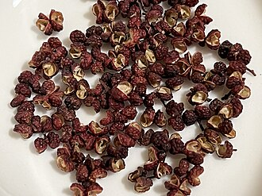
Not a true pepper — the dried berry husk of Zanthoxylum (prickly ash). The defining flavor of Sichuan cuisine. Creates a remarkable numbing-tingling sensation (má) by activating tactile touch receptors (not TRPV1 heat receptors like capsaicin). Combined with hot chili in málà (numbing-hot), the sensation amplifies perceived heat while numbing the tongue. Floral, citrusy, pine-like aroma.
Both a seed (small, rectangular, golden-tan) and a leaf (methi, used fresh or dried). Intensely bitter raw; mellows when toasted to a maple-like, nutty, slightly curry flavor. Used in Indian curry powders and masalas, pickles, injera (Ethiopian bread), and maple flavor extracts. The seeds contain soluble fiber that slows sugar absorption — used medicinally for blood sugar management.
The dried resin of Ferula assa-foetida root. Raw smell: intensely sulfurous, like rotten onions (the name means "stinking resin" in Persian). But cooked in hot oil for 10–15 seconds — transforms completely to a savory, onion-garlic-like aroma. Used in Indian cooking, especially by Jain vegetarians who avoid onions and garlic. A tiny pinch (1/8 tsp) is sufficient.
Seeds of Aframomum melegueta from West Africa. Related to cardamom; used as black pepper in medieval Europe before trade routes made true pepper affordable. Peppery with notes of cardamom, coriander, and jasmine. Traditionally used in West African and Northern African cooking. Now used by craft brewers and cocktail bartenders for their unusual aromatic heat.
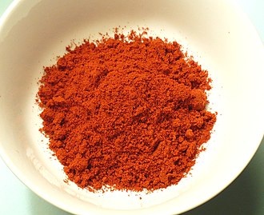
Spain's most important spice — specifically from La Vera and Murcia regions. Peppers smoke-dried over oak wood for weeks, then ground. Three types: dulce (sweet), agridulce (bittersweet), picante (hot). Essential in chorizo, patatas bravas, paella, romesco. The smoke is the flavor, not just the heat — fundamentally different from regular paprika.
Fresh or dried leaves of Murraya koenigii. Essential in South Indian, Sri Lankan, and Malaysian cooking — sputtered in hot oil at the start of cooking. Flavor: aromatic, slightly citrusy, herbal, with hints of anise. Not related to curry powder. Fresh leaves are incomparably better than dried. Used in dal, sambar, chutneys, coconut-based curries, and rasam. Freeze fresh leaves for longer storage.
Piper longum — a relative of black pepper that dominated European spice trade before black pepper. Flavor: deeply complex, warm, slightly sweet and smoky with a lingering heat more intense than black pepper. Used in Indian cooking (pippal), medieval European cuisine revival, and in Thai miang kham. More complex than black pepper — worth seeking out for braises, spice rubs, and desserts.
Capsaicin binds to the TRPV1 (Transient Receptor Potential Vanilloid 1) ion channel in sensory nerve cells. TRPV1 is normally activated by heat above 43°C — capsaicin fools these receptors into firing at normal body temperature. Your brain interprets this as burning heat, though no actual tissue damage occurs (at normal food concentrations). The pain signal triggers endorphin release — the "rush" that chili-heads seek.
Casein, the primary protein in dairy products (milk, yogurt, sour cream), acts as a detergent — it binds to capsaicin molecules (which are fat-soluble and non-polar) and strips them from the TRPV1 receptors. Water is polar and cannot dissolve capsaicin — drinking water spreads it around. Alcohol dissolves capsaicin partially. Full-fat dairy is most effective. Bread and starchy foods can also help by absorbing capsaicin mechanically.
Capsaicin is not broken down in the digestive system — it passes through largely intact. The second burn occurs 12–24 hours later during elimination. This is why extremely spicy food causes gastrointestinal distress. The rectum has TRPV1 receptors as well. The practical implication: eating ghost pepper for a challenge will cause discomfort the following morning regardless of how much you "powered through" during consumption.
Regular capsaicin exposure causes TRPV1 desensitization — receptors temporarily deactivate after repeated stimulation. Regular chili-eaters require progressively hotter chili to feel the same sensation. This is temporary — the receptors re-sensitize within days of stopping. Long-term regular eaters can comfortably eat bird's eye chilies that would incapacitate a non-habituated person. There's no permanent damage from tolerance building.
Heat is a balancing element in cooking, not just an intensity dial. Chile heat cuts through fat and richness (why hot sauce on fried chicken is perfect). It contrasts with sweetness (mango-habanero). It amplifies umami. The technique: start with less heat than you think, taste, then add more. Consider the delivery format: fresh chili has brightness and heat; dried chili has depth without freshness; chili oil has residual richness; hot sauce has acid + heat.
Capsaicin is concentrated in the white ribs (placental tissue) inside the chili — not the seeds (common misconception). The seeds are hotter only because they're in contact with the ribs. Remove seeds and ribs for milder heat while keeping the chili's flavor. The skin contributes no capsaicin. Capsaicin is fat-soluble — it infuses into oils during cooking, distributing heat throughout the dish. This is why even "removed" chilies leave heat behind in a sauce made with oil.
Toasting in a dry pan over medium heat (2–4 minutes, stirring constantly) dramatically amplifies flavor by activating Maillard reactions and volatilizing aromatic compounds. Toast whole spices — never pre-ground (they burn instantly). When fragrant and slightly darkened, transfer immediately to a cool plate (never leave in the hot pan — carryover heat burns them). Grind while warm for best results. Transform a dish: toasted cumin tastes 3–4x more complex than raw cumin.
Adding whole or ground spices to hot oil or fat at the beginning of cooking — a technique used across Indian, Mexican, and Middle Eastern cuisines. The fat-soluble aromatic compounds dissolve into the oil, infusing the entire dish. Mustard seeds and cumin seeds are "tempered" (fried until they pop). Ground spices are bloomed briefly (30–60 seconds). Asafoetida must be bloomed — raw it's acrid; cooked in oil it becomes savory and alluring.
Whole spices retain their aromatic compounds in the essential oil glands of the seed. Ground spices lose volatile aromatics within 6–12 months — sometimes much faster. For maximum flavor: buy whole, store in airtight glass jars away from heat and light, and grind as needed using a dedicated electric coffee grinder or mortar and pestle. Pre-ground spices are acceptable if used within 6 months of opening and stored properly.
Spices don't "go bad" (no food safety risk) but they do lose potency. Ground spices: 6–12 months optimal flavor. Whole spices: 1–2 years. Dried herbs: 1–2 years. The test: place a pinch in your palm, rub briskly, smell. Fresh should be vivid — if it smells faintly of dust or nothing, replace it. The most common cooking mistake is using old spices. A spice rack that looks like a museum exhibit is not a flavor asset.
Three enemies of spice longevity: heat, light, and moisture. Never store above the stove (heat + steam damage). Avoid transparent jars in bright light. Ideal: dark cupboard, airtight glass jars (or original sealed tins). Never introduce a wet spoon — moisture triggers clumping and oxidation. If you have large quantities, freeze excess whole spices — they last 3+ years frozen with negligible quality loss. Label with purchase date.
When a specific spice isn't available: Mace → nutmeg (related, similar flavor, slightly more delicate). Aleppo pepper → half sweet paprika + half cayenne. Sumac → lemon zest + small amount of paprika (loses tartness). Amchur (dried mango powder) → tamarind (tartness) or lemon juice. Grains of paradise → black pepper + cardamom. Black cardamom → smoky paprika + green cardamom. These substitutions sacrifice some authenticity but preserve the functional role of the spice.